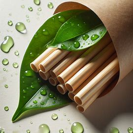
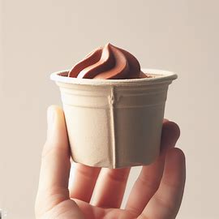

Soluciones sostenibles de embalaje para un futuro ecoamigable.
Descubre nuestra amplia gama de envases biodegradables diseñados para satisfacer tus necesidades sostenibles.
 Los fundadores son Miguel Ruiz Espada y Carmen García Godino quienes buscan revolucionar el comercio de los envases mediante el uso de envases biodegradables.
Conoce más sobre nuestra misión y compromiso con la sostenibilidad en el embalaje.
¡Contáctanos para obtener más información sobre nuestros productos y servicios!